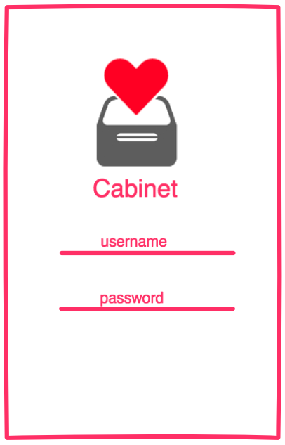
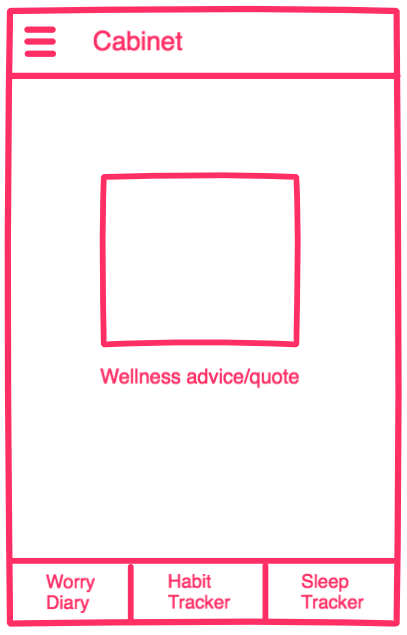
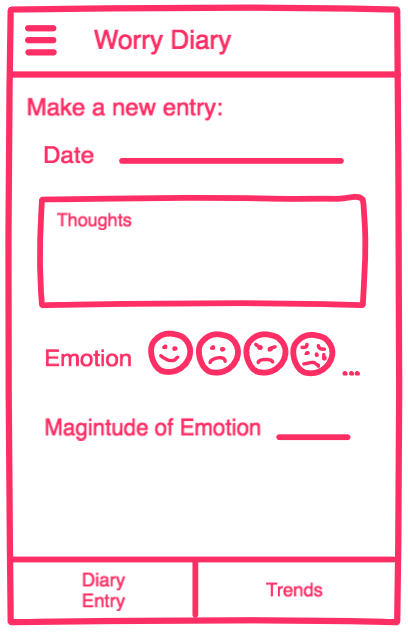
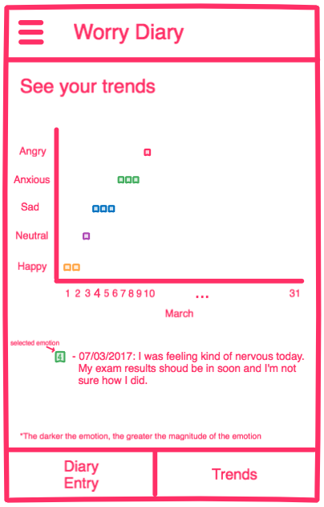

Current work in progress
The name Cabinet comes from two different inspirations: an actual cabinet in which you can store and file away things, and the syllables of congitive behavioural therapy - CBT.
We wanted to create an Android app as a way to improve our skills and knowledge of Java, Android, and general software principles. A wellness app that encompased a few different features seemed like the perfect idea. We want this app to have three elements: worry diary, habit tracker, and sleep tracker.
The Worry Diary is the first feature we're working to implement. It is a combination of a diary and a mood tracker. The user will be able to make an entry detailing the day's thoughts, how they felt emotionally, and how strongly they felt that emotion. They will be able to track their moods over time and determine any trends. This will also allow the user to possibly even identify reasons or triggers for certain emotions.
 